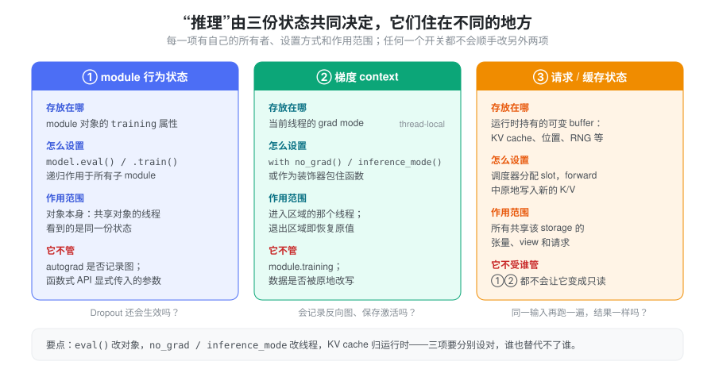
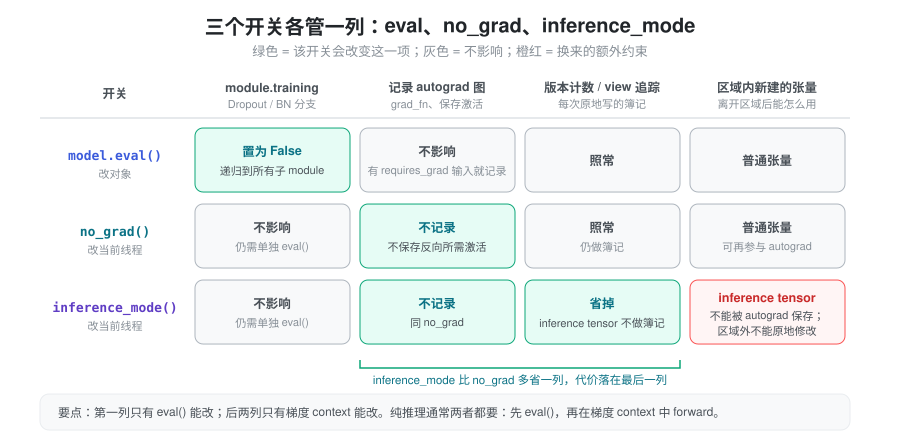
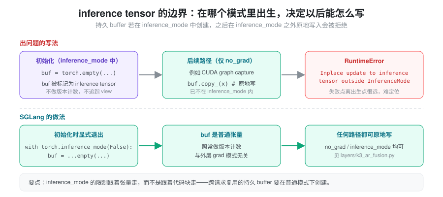

- 已经
model.eval()了，为什么显存里还在为反向保存激活？换个问法：eval()和no_grad()到底谁管谁？ - 把
no_grad()换成更“快”的inference_mode()后，某个持久 buffer 在 CUDA graph capture 时原地写入，为什么突然报错？ - 模式开关都设了，同一份输入跑两遍结果却不一样，问题出在哪？
“模型在做推理”是业务语义，PyTorch 不会据此自动关闭训练行为和 autograd，也不会把缓存冻结成只读。这三个问题分别落在三份互相独立的状态上。本篇先建立“三份状态、三个所有者”的模型，再看每个开关的边界，最后对照 SGLang 中它们各自在哪里被设定。
抽象：三份状态，三个所有者
“推理是否正确、是否省资源”由三份状态共同决定，关键在于它们住在不同的地方：
- module 行为状态挂在对象上：每个
nn.Module的training属性。model.eval()改的是这个对象，所有持有它的线程看到同一份值。 - 梯度 context 挂在线程上：grad mode 是
thread-local 的，进入
no_grad()/inference_mode()区域时设置，离开时恢复。 - 请求 / 缓存状态挂在运行时上：KV cache、位置计数、随机数状态等可变 buffer 由推理框架持有，forward 中会被原地写入。

有了这个模型，排查就有了统一判据：出问题的那项状态归谁管，就去那里修。 Dropout 还在生效，看对象状态或函数式参数；显存里有反向图，看当前线程的梯度 context；结果不可复现，看可变 buffer 和随机性。任何一个开关都不能替代另外两项。
eval、no_grad 与 inference_mode 各管什么
| 手段 | 控制什么 | 主要边界 |
|---|---|---|
model.eval() |
将 module 及子 module 的 training 状态置为
false |
不关闭梯度记录，也不冻结参数 |
torch.no_grad() |
禁止区域内的反向自动微分图记录 | 不自动切换 module 的训练状态 |
torch.inference_mode() |
关闭梯度记录，并减少 view tracking 和版本计数等开销 | 其中创建的 inference tensor 与后续 autograd 的交互限制更严格 |

eval() 是否改变输出，由各 module
的实现决定，例如标准 Dropout 和 BatchNorm
会依据训练状态切换行为。纯 Linear
本身没有相同的训练/推理分支。梯度模式和 module
模式互相独立，见 Autograd
mechanics。
纯推理的常见写法是两者都设：
model.eval()
with torch.inference_mode():
output = model(inputs)inference_mode() 比 no_grad()
多省掉的，是对 inference tensor 的版本计数和 view
追踪；代价是这些张量离开区域后受限：不能被需要 autograd
保存它的计算使用，也不能在 inference mode
之外被原地修改。因此如果结果随后要参与训练或梯度计算，通常优先考虑
no_grad()，并确认后续计算需要哪些张量；必要时应在区域外创建普通副本（例如
clone()），而不是假定 detach()
可以解除所有限制。见 inference_mode。
这条限制跟着张量走，而不是跟着代码块走：张量在哪个模式下“出生”，决定了它之后能怎么被写。推理服务中最容易踩到的，是初始化阶段在
inference mode 中创建的持久 buffer，后来在只开了
no_grad() 的路径上被原地写入。

函数式 API 未必读取 model.training
model.training 只被读取它的代码使用。标准
nn.Dropout 会依据 module
状态工作，但直接调用函数式算子时，其行为由参数决定——这相当于把“对象状态”这一项绕过去了。
SDPA 即使在 eval() 下，也按传入的
dropout_p 应用
dropout；应显式传入推理所需值：
# forward 中，self.p 是配置的训练 dropout 概率
out = torch.nn.functional.scaled_dot_product_attention(
q, k, v,
dropout_p=self.p if self.training else 0.0,
)torch.nn.functional.dropout() 也需要正确传递
training。不能只看到模型已 eval()
就认为所有自定义函数路径都关闭了 dropout。见 SDPA
和 functional.dropout。
推理模式不会让状态变成只读
第三份状态不受前两个开关管辖。inference_mode()
不会把模型和缓存变成只读对象；KV
cache、位置计数、随机数状态以及自定义模块的状态，仍可能在
forward 中变化。原地操作也照常生效：
view = cache[:, :valid_length]
view.zero_() # view 与 cache 共享存储，原 cache 也被修改这在没有梯度的推理中依然会发生。no_grad() 和
inference_mode() 控制自动微分，不替你管理
aliasing
和业务状态。使用原地更新节省内存前，应确认没有其他请求、张量别名或未完成的
stream 工作继续读取原内容。detach()
同样不复制数据，也不能将一个共享缓冲区变成独立的请求副本。布局与共享关系见
Tensor
Memory，异步生命周期见 显存管理。
因此“同一份输入重复执行”是否得到同一结果，需要同时确认：
- dropout 与其他随机分支是否关闭；
- cache 是否按预期清空、复用或追加；
- position、mask 与有效序列长度是否一致；
- 多请求是否误用同一个可变缓冲区；
- kernel 的数值与确定性行为是否一致，见 Nondeterminism。
评估无 cache 的完整前向与带 cache 的逐 token 前向时，模式开关相同还不够，需要对齐这些状态和位置语义。
线程边界：context 不跨线程，对象状态跨线程
两类开关的作用范围恰好相反。梯度模式是 thread-local
的：主线程进入 inference_mode()
后，不能假定另一个工作线程也继承了相同
context，应在执行推理的线程中设置。model.eval()
则改变 module
对象的状态，如果多个线程共享对象，其状态也被共享——一个线程调用
train()，其他线程立即受影响。见 no_grad
和 inference_mode。
实践上，把梯度 context 设在“真正执行 forward
的那个循环”的入口，而不是进程启动处；把 eval()
放在模型加载完成时一次性设好。
在 SGLang 中，三份状态分别由谁设定
以下路径均指 python/sglang/srt/ 下。
对象状态：加载完即 eval。
绝大多数模型加载器在 model_loader/loader.py
中以 return model.eval() 结束
load_model()，之后 training
不再改变。
梯度 context：包在调度循环上。
managers/scheduler.py 的
event_loop_normal() 与
event_loop_overlap() 都用
@DynamicGradMode() 装饰，因此 context
落在运行调度循环的线程上，循环内所有 forward
都继承它。DynamicGradMode（utils/common.py）把两种模式合成一个开关：
def __enter__(self):
if _ENABLE_TORCH_INFERENCE_MODE: # SGLANG_ENABLE_TORCH_INFERENCE_MODE
self._inference_mode_context = torch._C._InferenceMode(self.mode)
self._inference_mode_context.__enter__()
else: # 默认
self.prev = torch.is_grad_enabled()
torch.set_grad_enabled(False)即默认走 no_grad 语义，设置环境变量
SGLANG_ENABLE_TORCH_INFERENCE_MODE 后才切到
inference mode。此外，模型的
*ForCausalLM.forward 自身通常也带
@torch.no_grad()（例如
models/llama.py 的
LlamaForCausalLM.forward）；model_executor/runner/prefill_cuda_graph_runner.py
的 _run_forward() 注释说明，绕过外层 forward
直接调用内层时需要补上这个装饰器，否则部分
torch.compile 的 out= 调用会因
autograd 报错。
inference tensor 的边界：持久 buffer 显式退出
inference mode。 因为梯度 context
可能是两种之一，跨步复用的 buffer
必须在两种模式下都能被原地写。layers/k3_ar_fusion.py
的 _create_buffer() 就用
with torch.inference_mode(False): 创建对称内存
buffer，注释写明原因：若在 inference mode 中创建，它会成为
inference tensor，之后在 no_grad 路径（CUDA graph
capture）上的原地写入会被拒绝。distributed/device_communicators/triton_symm_mem_ag.py
中也有同样的写法。
请求 / 缓存状态：归运行时，不归 module。
KV cache 不是模型参数或 module buffer，而是
ModelRunner.token_to_kv_pool（如
mem_cache/memory_pool.py 的
MHATokenToKVPool，持有 k_buffer /
v_buffer）。attention backend 持有同一个 pool
的引用，在 forward 中通过 set_kv_buffer()
原地写入调度器分配的
slot（ForwardBatch.out_cache_loc）；RadixAttention
层只提供 layer_id 等元信息。哪个请求占哪些
slot、何时释放，由调度器和内存池决定，梯度开关对此毫无影响，见
Memory Pool。
小结
推理初始化时，应将 module 行为、梯度 context
和请求级缓存分别设定清楚：eval()
改对象，no_grad() /
inference_mode()
改当前线程，可变缓存归运行时管理。三者共同决定正确性，其中任何一个开关都不能替代另外两项；而
inference_mode()
的额外限制附着在它创建的张量上，持久 buffer
应在普通模式下创建。